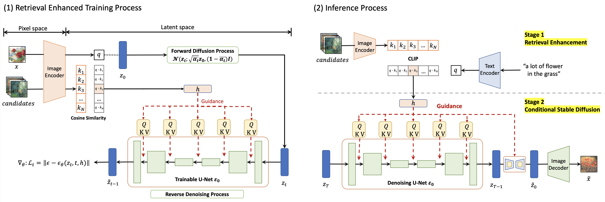
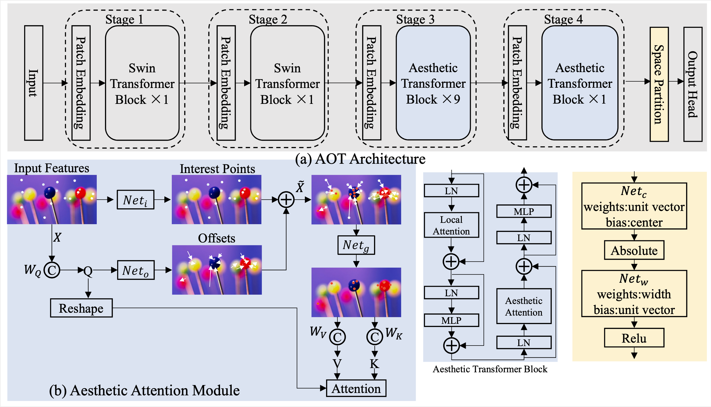

Projects & Courseworks More »
Research Projects
- Independent Researcher @ Text to Image Generation Enhanced by Retrieval Supervised by, Zhiwu Lu, from Gaoling School of Artificial Intelligence in Renmin University of China, Beijing, China. (09/2022 - 02/2023)
Abstract: By applying the diffusion models in the latent space of powerful pre-trained autoencoders, stable diffusion models has achieved great success in text-to-image generation, which can generate high-quality images consistent with input texts. However, the pre-trained stable diffusion can hardly be fintuned on a dataset in a specific domain~(e.g, watercolor and chinese painting), because the description of corresponding images are hardly derived. In this paper, we propose a retrieval-based method to finetune the pre-trained stable diffusion model on a dataset in a specific domain, which contains only images without texture descriptions. Specifically, we adopt a large-scale pre-trained visual-language model~(e.g.,CLIP) to retrieve a reference image in training set for each of input image in the training phase, which is most similar to the input image (except itself) in semantic space of CLIP. We then take the reference image as condition instead of texture description for training. In the test phase, we retrieve the top-1 result from candidates with given text, and adopt the retrieved image as condition to generate image. To better assess text-to-image generation models in a specific domain, we release a high-quality dataset consists of 2986 chinese painting images. Extensive results on our proposed dataset demonstrate the superior performance of our proposed method.
- Research Assistant @ Image Color Aesthetics Assessment Proposed a novel dataset ICAA17K available on google drive and baidu drive, Supervised by Amlong Ming from School of Computer Science, BUPT, avaliable on GitHub, the PDF version of paper can be downloaded from here, Beijing, China. (12/2022 - 07/2023)
Abstract: We present a comprehensive study on a new task named image color aesthetics assessment (ICAA), which aims to assess color aesthetics based on human perception. ICAA is important for various applications such as imaging measurement and image analysis. However, due to the highly diverse aesthetic preferences and numerous color combinations, ICAA presents more challenges than conventional image quality assessment tasks.To advance ICAA research, 1. we propose a baseline model called the Delegate Transformer, which not only deploys deformable transformers to adaptively allocate interest points, but also learns human color space segmentation behavior by the dedicated module.2. We elaborately build a color-oriented dataset, ICAA17K, containing 17K images, covering 30 popular color combinations, 80 devices and 50 scenes, with each image densely annotated by more than 1,500 people. 3. We develop a large-scale benchmark of 15 methods, the most comprehensive one thus far based on two datasets, SPAQ and ICAA17K. Our work, not only achieves state-of-the-art performance, but more importantly offers the community a roadmap to explore solutions for ICAA. Code and dataset are available in the supplementary material.
- Independent Researcher @ Continual Reinforcement Learning about a workshop in ICLR 2021, I wrote a literature review about Continual Reinforcement Learning(CRL) see here, and delivered a talk which is available on YouTube, presentation slides can be found here
Abstract: Humans possess a remarkable capacity for continuous learning and adaptation throughout their lifetimes. This ability is often referred to as "never-ending learning," also known as continual learning or lifelong learning. Never-ending learning entails the ongoing development of increasingly complex behaviors and the acquisition of intricate skills to complement those already acquired. It involves the capacity to reapply, adapt, and generalize these abilities to novel situations. In this survey, I delve into the fundamental concept of Continual Reinforcement Learning (CRL) and offer a concise introduction to the world model and the mechanisms employed to bolster an agent's lifelong learning journey.
Individual Projects
- JWordle An Java version Wordle based on Swing, Supervised by Ethan Lau (QMUL), avaliable on GitHub, London, UK. (04/2022 - 05/2022)

Group Projects
- Minority Culture Protection and Promotion Project Supported by AI and Database Technology , Beijing, China. (01/2023 - 09/2023)
Main Contributions:
- Individually developed the Yao culture database, amassing 40GB data using the Java Springboot framework and MySQL. This initiative forms a foundational resource for preserving and promoting minority cultures.
- Applied CLIP for image semantic understanding, integrating a multi-modal retrieval function into the database.
- Granted Computer Software Copyright (Software Name: Data Management Generation System Based on Database and Artificial Intelligence V1.0, in process of publication) by National Copyright Administration. see certificate
- 5G-based Smart Water Cruising Device For Floating Garbage Cleaning, Beijing, China. (04/2022 - 07/2022)

Main Contributions:
- Implemented YOLO V5 for AI algorithm development, achieving a recognition accuracy of 98.87% on an authentic river-floating garbage dataset.
- Spearheaded electric control design, deploying a Raspberry Pi as the control interface and utilizing 5G for real-time data analysis from the onboard camera.
- Led conceptualization and structure design of a catamaran, incorporating a unique drainage front fork and trash basket. Executed hull modeling using Solidworks and employed 3D printers for part fabrication and assembly.